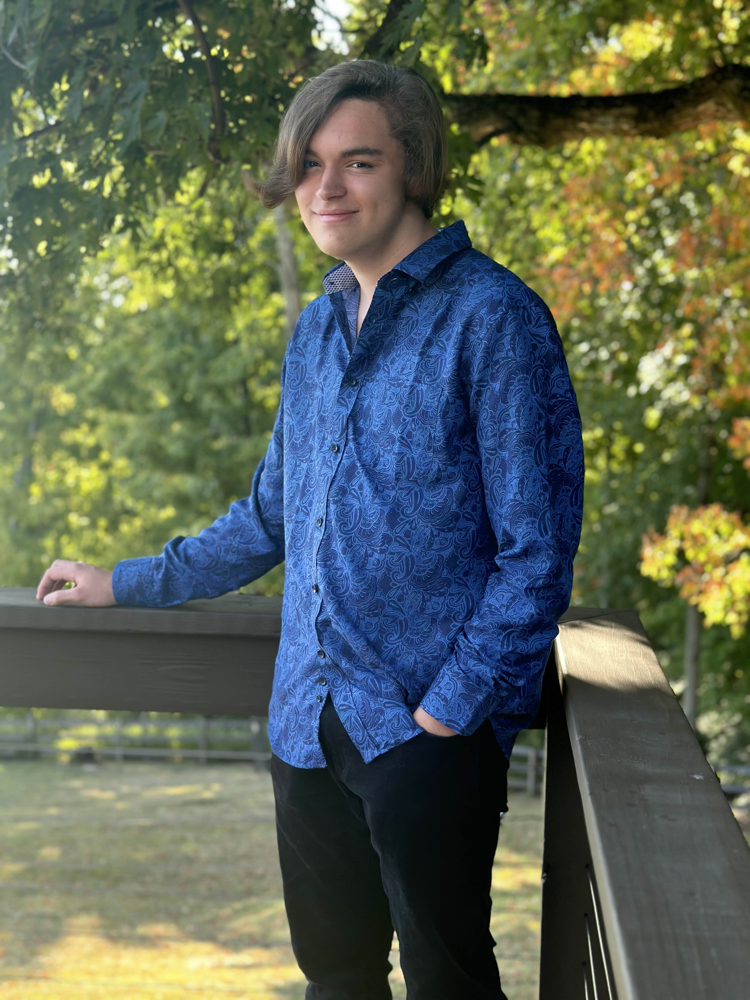

About Me
Hey! I'm Maddox Miller, a current freshman at the University of Cincinnati. I am writing this webpage for a project in my English class.
I've always loved reading books, and I advocate for the human right to knowledge. The human mind is very curious, and should not be limited by controlling governments or schools that believe certain books should be banned for it's language and topics. Students should have access to all knowledge, and be taught history and critical topics no matter how dark it is, and outside of America, there should be more access to books regardless of whether they display anti-religious or political ideas. In order to grow as a society, people should have a firm grasp of all ideas, so that people can understand and accept things that don't follow their views.
If you want to reach out to me, you can through my email. millmx@mail.uc.edu. Thank you for viewing my website!